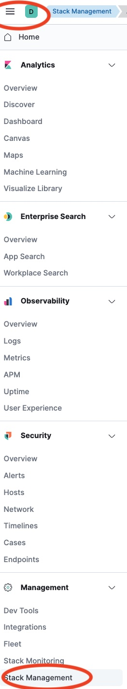
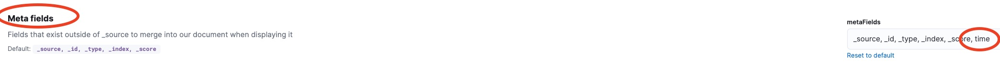
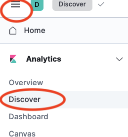

Assignment 10 Logging with EFK Stack¶
In a complicated distributed system such as Kubernetes, we will have different logs for different components, and extracting insights from logs can be a daunting task. The EFK stack (ElasticSearch, FluentD, Kibana) can help make this task easier. We are going to deploy EFK stack and see it in action.
Deploy online-boutique app that emits logs to stdout in JSON format.
We will then deploy Cloud Native FluentD logging agent and configure:
-
source directive (input) that will use logs from
/var/log/containersfolder (location used by docker daemon on a Kubernetes node to store stdout from running containers). This events will be tailed read from text file usingin_tailInput Plugin. And parsed usingmulti_formatplugin. -
filter directive that will use kubernetes metadata plugin to add metadata to the log and parse all kubernetes logs in specific format.
-
match directive (output) that will use
out_elasticsearchOutput Plugin and send all logs to ElasticSearch underfluentd-*prefix.
Objective:
- Install Elasticsearch and Kibanna
- Deploy online boutique Application
- Install and Configure FluentD
- Configure ElastackSearch with FluentD
(Optional) 0 Create Regional GKE Cluster on GCP¶
Note
Skip this step if you still have the notepad cluster from previous assignment, you can reuse it
gke-auto-<STUDENT_NAME>-notepad-dev
Step 1 Enable the Google Kubernetes Engine API.
gcloud services enable container.googleapis.com
Step 2 From the cloud shell, run the following command to create a cluster with 1 node:
gcloud container clusters create gke-auto-<STUDENT_NAME>-notepad-dev \
--region us-central1 \
--enable-ip-alias \
--enable-network-policy \
--num-nodes 1 \
--machine-type "e2-standard-4" \
--release-channel stable
gcloud container clusters get-credentials gke-auto-<STUDENT_NAME>-notepad-dev --region us-central1
1 Install Elasticsearch, Kibana, Fluentd Helm Charts¶
1.1 Elasticsearch Installation¶
Step 1: Create a new namespace for EFK stack:
kubectl create ns efk
(Optional) use kubens it to make default namespace efk
kubens efk
If you execute this step you can safely omit -n efk from all subsequent commands, since this is an optional step
we will stell show that prefix on the commands below.
Step 2: Install Elasticsearch using Helm:
helm repo add elastic https://helm.elastic.co
helm repo update
helm install elasticsearch elastic/elasticsearch -n efk --version 7.17.3
Note
The latest version of Kibana no longer allows for Fluentd, insted you need to use log-stash. Since our goal is to see Fluend in action we are installing a slightly older version instead.
Check the status of deployment:
kubectl get pods --namespace=efk -l app=elasticsearch-master -w
1.2 Kibana installation¶
Step 1: Create custom Kibana configuration, that will allow to expose Kibana Dashboard:
cat << EOF>> kibana_values.yaml
service:
type: LoadBalancer
EOF
cat kibana_values.yaml
Make sure values are correct
Step 2: Deploy Kibana Ingress Charts with custom parameters in efk namespace:
helm install kibana elastic/kibana -n efk --values kibana_values.yaml --version 7.17.3
helm list -n efk
Access Kibana from your browser using LoadBalancer IP on port 5601:
kubectl get svc -n efk
You should see a service named kibana-kibana of type LoadBalancer.
That is your public Kibana IP. Now you can access your Kibana dashboard using:
http://${KIBANA_IP}:5601/app/home#/
Note
Unlike Kibana 8, the version 7 does not implement authentication.
1.3 Fluentd installation¶
Step 1: Create custom Fluentd configuration, below snippet is updating existing configmap with some parameters:
cat << EOF>> fluentd_values.yaml
fileConfigs:
# here we read the logs from Docker's containers and parse them
01_sources.conf: |-
## logs from podman
<source>
@type tail
@id in_tail_container_logs
@label @KUBERNETES
path /var/log/containers/*.log
pos_file /var/log/fluentd-containers.log.pos
tag kubernetes.*
read_from_head true
<parse>
@type multi_format
## pattern matching rules for incoming messages from the defined sources
<pattern>
format json
time_key time
time_type string
time_format "%Y-%m-%dT%H:%M:%S.%NZ"
keep_time_key true
</pattern>
<pattern>
format regexp
expression /^(?<time>.+) (?<stream>stdout|stderr)( (.))? (?<log>.*)$/
time_format '%Y-%m-%dT%H:%M:%S.%NZ'
keep_time_key true
</pattern>
</parse>
emit_unmatched_lines true
</source>
# we use kubernetes metadata plugin to add metadata to the log
02_filters.conf: |-
<label @KUBERNETES>
<match kubernetes.var.log.containers.fluentd**>
@type relabel
@label @FLUENT_LOG
</match>
# <match kubernetes.var.log.containers.**_kube-system_**>
# @type null
# @id ignore_kube_system_logs
# </match>
<filter kubernetes.**>
@type kubernetes_metadata
@id filter_kube_metadata
skip_labels false
skip_container_metadata false
skip_namespace_metadata true
skip_master_url true
</filter>
<match **>
@type relabel
@label @DISPATCH
</match>
</label>
# We filtering what logs will be send
03_dispatch.conf: |-
<label @DISPATCH>
<filter **>
@type prometheus
<metric>
name fluentd_input_status_num_records_total
type counter
desc The total number of incoming records
<labels>
tag ${tag}
hostname ${hostname}
</labels>
</metric>
</filter>
<match **>
@type relabel
@label @OUTPUT
</match>
</label>
# we send the logs to Elasticsearch
04_outputs.conf: |-
<label @OUTPUT>
<match **>
@type elasticsearch
host "elasticsearch-master"
port 9200
path ""
user elastic
password changeme
</match>
</label>
EOF
Note
In a real world deployment you would use service account authentication or dedicated credentials, this is ok for trial and test but not for production.
Ensure you spend some time reading the comments in the configuration above.
Task 2: Deploy Fluentd Chart with custom parameters in efk namespace:
Deploy Fluentd with Helm:
- Use the repository name: fluent
- Use the repository url: https://fluent.github.io/helm-charts
- install fluent/fluend in the
efknamespace with thefluentd_values.yamlas values file.
2 Configure Kibana and Create Index:¶
Kibana requires an index pattern to access the Elasticsearch data that you want to explore. An index pattern selects the data to use and allows you to define properties of the fields.
In our case we configured fluentd index, that should be populated at Elasticsearch
Step 1: Locate Kibana URL:
kubectl get svc -n efk
Step 2: Launch the Kibana web interface:
loadbalancer_ip:5601
Result
You should see your Kibana interface
Step 3: Update Kibana Configuration to support time Meta fields:
In UI Go to: Management - Stack Management:

Step 4: Then Kibana - Advanced Setting:
Step 5: Find field: Meta fields, and add time field as following:

Step 7: Create an index pattern.
In UI Click: Discover (under analytics)


Click Create Index Pattern button.
Note
alternative path: Management - Stack Management -> Kibana Index Patterns
Step 8: In Create index pattern window. Type inside Index pattern name: fluentd* as the index pattern name, for timestamp select time. More documentation can be found here

Result
Your index pattern matches 1 source
Click Next Step >
Step 9: Configure which field Kibana will use to filter log data by time. In the dropdown, select the @time field, and hit Create index pattern.
Summary
Our ElasticSearch and Kibana fully configured. You should be able now see some cluster logs in Kibana.
Step 10: View Kibana Logs from our GKE cluster:
In UI Click: Discover (under analytics)
In Query search field paste: `kubernetes.namespace_name: kube-system`
In Range field paste: Select last 15 minutes
Click Refresh
Result
you can see logs from kube-system namespace
Note
You can save you Query for future use
3 Deploy onlineboutique application¶
Deploy microservices application onlineboutique:
Create Namespace onlineboutique
kubectl create ns onlineboutique
Deploy Microservice application
git clone https://github.com/GoogleCloudPlatform/microservices-demo.git
cd microservices-demo
kubectl apply -f ./release/kubernetes-manifests.yaml -n onlineboutique
Verify Deployment:
kubectl get pods -n onlineboutique
4 Observe onlineboutique logs¶
Step 1: First let's review the logs using kubectl logs command locally on the cluster.
We going to check paymentservice pod logs
export PAYMENTSERVICE_POD=$(kubectl get pods -n onlineboutique | grep paymentservice |awk '{ print $1}')
kubectl logs $PAYMENTSERVICE_POD -n onlineboutique
Step 2: Now let's review Kibana Logs from our GKE cluster on onlineboutique namespace:
In Query search field paste: `kubernetes.namespace_name: onlineboutique`
In Range field paste: Select last 15 minutes
Click Refresh
Result
We can see all logs from onlineboutique namespace
Step 2: Now let's review Kibana Logs from paymentservice pod only
echo $PAYMENTSERVICE_POD
In Query search field paste: `kubernetes.namespace_name: onlineboutique`
In Range field paste: Select last 15 minutes
Click Refresh
Summary
Developers should not have access to Kubernetes CLI, however they can get access to Observability tools like Kibana to allow them troubleshooting!
5 Review Fluentd configuration¶
In some cases, you want to filter logs from only your applications to be seen by your team. To achieve this, Fluentd should be configured to only intake specific logs so that no resources are wasted.
Review sources configuration:
kubectl get configmap -n efk fluentd-config -oyaml | grep -v "#" | grep -A20 01_sources.conf
01_sources.conf: |-
<source>
@type tail
@id in_tail_container_logs
@label @KUBERNETES
path /var/log/containers/*.log
pos_file /var/log/fluentd-containers.log.pos
tag kubernetes.*
read_from_head true
<parse>
@type multi_format
<pattern>
format json
time_key time
time_type string
time_format "%Y-%m-%dT%H:%M:%S.%NZ"
keep_time_key false
</pattern>
<pattern>
format regexp
expression /^(?<time>.+) (?<stream>stdout|stderr)( (.))? (?<log>.*)$/
Note
id: A unique identifier to reference this source. This can be used for further filtering and routing of structured log data
type: Inbuilt directive understood by fluentd. In this case, “tail” instructs fluentd to gather data by tailing logs from a given location. Another example is “http” which instructs fluentd to collect data by using GET on http endpoint.
path: Specific to type “tail”. Instructs fluentd to collect all logs under /var/log/containers directory. This is the location used by docker daemon on a Kubernetes node to store stdout from running containers
pos_file: Used as a checkpoint. In case the fluentd process restarts, it uses the position from this file to resume log data collection
tag: A custom string for matching source to destination/filters. fluentd matches source/destination tags to route log data
Step 2 Review Filter configuration
kubectl get configmap -n efk fluentd-config -oyaml | grep -v "#" | grep -A20 03_dispatch.conf
02_filters.conf: |-
<label @KUBERNETES>
<match kubernetes.var.log.containers.fluentd**>
@type relabel
@label @FLUENT_LOG
</match>
<filter kubernetes.**>
@type kubernetes_metadata
@id filter_kube_metadata
skip_labels false
skip_container_metadata false
skip_namespace_metadata true
skip_master_url true
</filter>
<match **>
@type relabel
@label @DISPATCH
</match>
Step 3 Review Dispatch configuration
kubectl get configmap -n efk fluentd-config -oyaml | grep -v "#" | grep -A20 03_dispatch.conf
03_dispatch.conf: |-
<label @DISPATCH>
<filter **>
@type prometheus
<metric>
name fluentd_input_status_num_records_total
type counter
desc The total number of incoming records
<labels>
tag ${tag}
hostname ${hostname}
</labels>
</metric>
</filter>
<match **>
@type relabel
@label @OUTPUT
</match>
</label>
Step 4 Review Output Plugin configuration
kubectl get configmap -n efk fluentd-config -oyaml | grep -v "#" | grep -A10 04_outputs.conf
04_outputs.conf: |-
<label @OUTPUT>
<match **>
@type elasticsearch
host "elasticsearch-master"
port 9200
path ""
user elastic
password changeme
</match>
</label>
Note
match: tag indicates a destination. It is followed by a regular expression for matching the source. In this case, we want to capture all logs and send them to Elasticsearch, so simply use **
type: Supported output plugin identifier. In this case, we are using ElasticSearch which is a built-in plugin of fluentd.
host/port: ElasticSearch host/port. Credentials can be configured as well, but not shown here.
6 Configure Fluentd to specific logs¶
Let's configure Fluentd to only send onlineboutique namespace logs to elasticsearch:
Step 1: Modify helm fluentd_values.yaml values file for 03_dispatch.conf config so that only log files that matches onlineboutique namespace is labeled to be sent:
cd ../
edit fluentd_values.yaml
Replace line under 03_dispatch.conf: |- config:
<match **> # Send all logs
To:
<match kubernetes.var.log.containers.**_onlineboutique_**>
So it looks as following:
03_dispatch.conf: |-
<label @DISPATCH>
<filter **>
@type prometheus
<metric>
name fluentd_input_status_num_records_total
type counter
desc The total number of incoming records
<labels>
tag ${tag}
hostname ${hostname}
</labels>
</metric>
</filter>
<match kubernetes.var.log.containers.**_onlineboutique_**>
@type relabel
@label @OUTPUT
</match>
</label>
<match kubernetes.var.log.containers.**_onlineboutique_**> will filter out logs with _onlineboutique_. This configuration will only relabel the logs that matches the configuration as @OUTPUT. As specified in 04_outputs.conf, only logs labelled as @OUTPUT will be sent to elasticsearch.
Note that this is not the only way to configure fluentd to send one namespace's logs.
Step 2: Install helm diff plugin
helm plugin install https://github.com/databus23/helm-diff
Step 3: Verify diff
helm diff upgrade fluentd fluent/fluentd -n efk --values fluentd_values.yaml
Output:
- <match **>
+ <match kubernetes.var.log.containers.**_onlineboutique_**>
Step 4: Update fluentd configmap via Helm Upgrade
helm upgrade fluentd fluent/fluentd -n efk --values fluentd_values.yaml
Step 5: Observe that fluentd stop sending logs for other namespaces than _onlineboutique_
In Query search field paste: `kubernetes.namespace_name: kube-system`
In Range field paste: Select last 15 minute
Click Refresh
Result
No more kube-system logs send to the ElasticSearch and hence Kibana can't display them.
However we can see all historical logs!!! Prior we disabled the logging for all namespaces.
Feel free to play around with EFK, there are a lot mroe things it does that this assignmet didn't cover.
Optional challenges:
- Execute aggregate log searches to see:
- Which service fails the most?
- What is the frequency of failures?
- Setup a monitoring dashboard for the online boutique
- The online boutique also exports metrics and traces, can you get them into EFK?
Optional reading material:
Feel free to save these for future reference.
- How to choose the right open-source log collector
- Introduction to Fluentd: Collect logs and send almost anywhere
- Introduction to Fluentd & Fluent Bit
- 03:00 - Introduction to Fluentd and Fluent Bit (Slides)
- 18:30 - When should I use Fluentd vs Fluent Bit
- 22:00 - Deploying Fluentd with kubectl
- 30:00 - Setting up Kibana
- 34:00 - Deploying Fluent Bit with Helm
- 40:00 - Config Visualizer
- 48:00 - Filtering logs
- 01:00:00 - Stream processing with Fluent Bit
- Introduction to fluentbit
- Grafana Loki: like Prometheus, but for Logs
- Correlate Your Metrics, Logs & Traces with the curated OSS observability stack from Grafana Labs
7 Submit your assignment¶
Save the output of the following commands and submit to the assignment folder:
kubectl describe pods -n efk > k8s_pods_$STUDENT_NAME_efk.txt
kubectl describe pods -n onlineboutique > k8s_pods_$STUDENT_NAME_onlineboutique.txt
kubectl get all -A > k8s_resources_$STUDENT_NAME.txt
8 Cleanup¶
Uninstall Helm Charts:
helm uninstall fluentd -n efk
helm uninstall kibana -n efk
helm uninstall elasticsearch -n efk
Delete GKE cluster:
gcloud container clusters delete gke-auto-<STUDENT_NAME>-notepad-dev --region us-central1